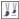

ыстрые ссылки на процедуры, описанные на этой странице:
• |
Можно скопировать пиксели из одной области изображения в другую, чтобы закрыть поврежденные или ненужные элементы изображения. Например, можно восстановить оборванный фрагмент или удалить с изображения ненужное лицо, применив клонированные пиксели в области, которую требуется удалить. Кроме того, можно клонировать требуемые элементы изображения и применить их в другой области изображения или в другом изображении. При клонировании объекта вновь клонированные области добавляются в активный объект. Кроме того, можно создавать абстрактные изображения на основе пикселей, позаимствованных из исходного изображения.
При клонировании в окне изображения отображаются две кисти: кисть исходной точки и кисть клонирования, которая применяет скопированные пиксели из исходной точки. Кисть исходной точки отображается с перекрестьем, чтобы ее можно было отличить от кисти клонирования. Кисть исходной точки перемещается по отношению к кисти клонирования при перетаскивании курсора по изображению.
Инструмент Клонирование был использован для удаления ожерелья женщины.
| Клонирование области изображения или объекта |
1. |
В наборе инструментов выберите инструмент Клонирование .
|
2. |
На панели свойств откройте меню выбора клонирования и выберите
инструмент клонирования.
|
3. |
Выберите кисть в списке Тип кисти.
|
4. |
Щелкните изображение, чтобы задать исходную точку для клонирования.
|
Если требуется выполнить сброс исходной точки, щелкните правой кнопкой мыши в области, которую требуется клонировать. |
5. |
Перетащите кисть клонирования в окне изображения для применения
пикселей из исходной точки.
|
Copyright 2012 Corel Corporation. Все права защищены.